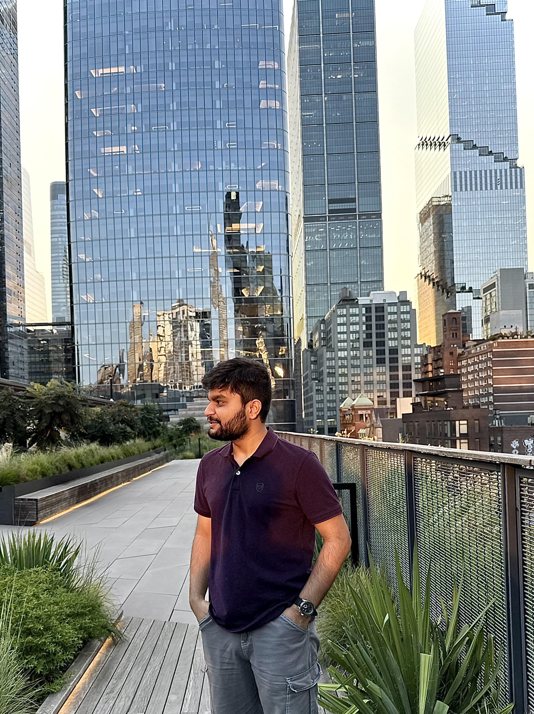
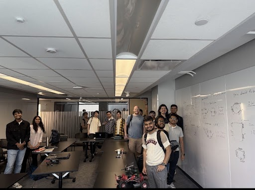
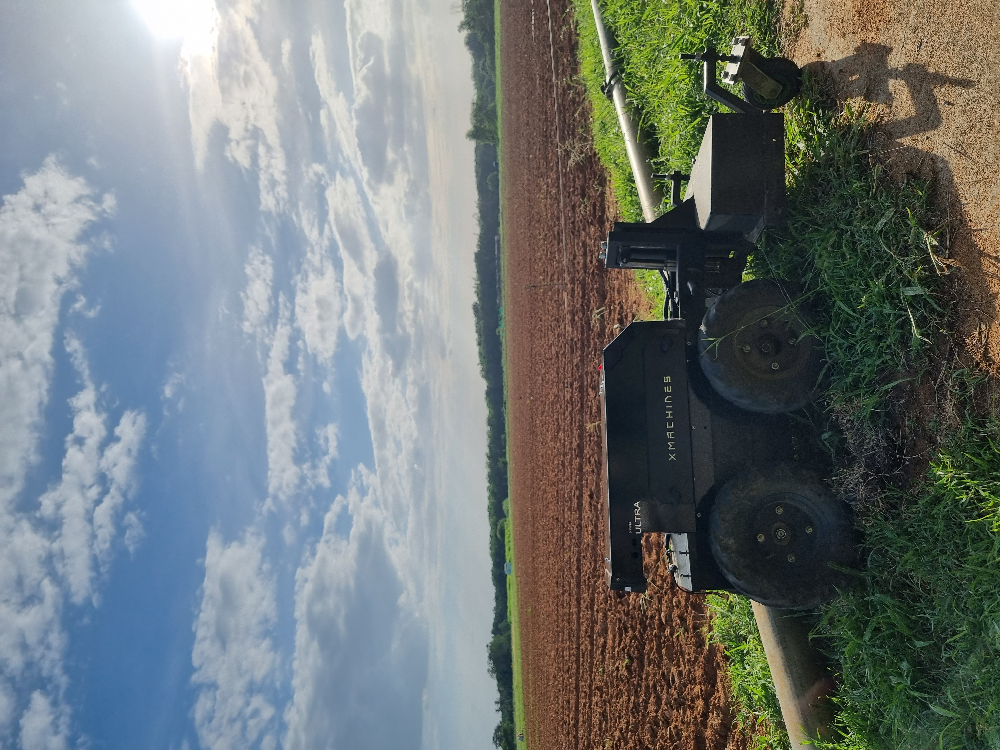
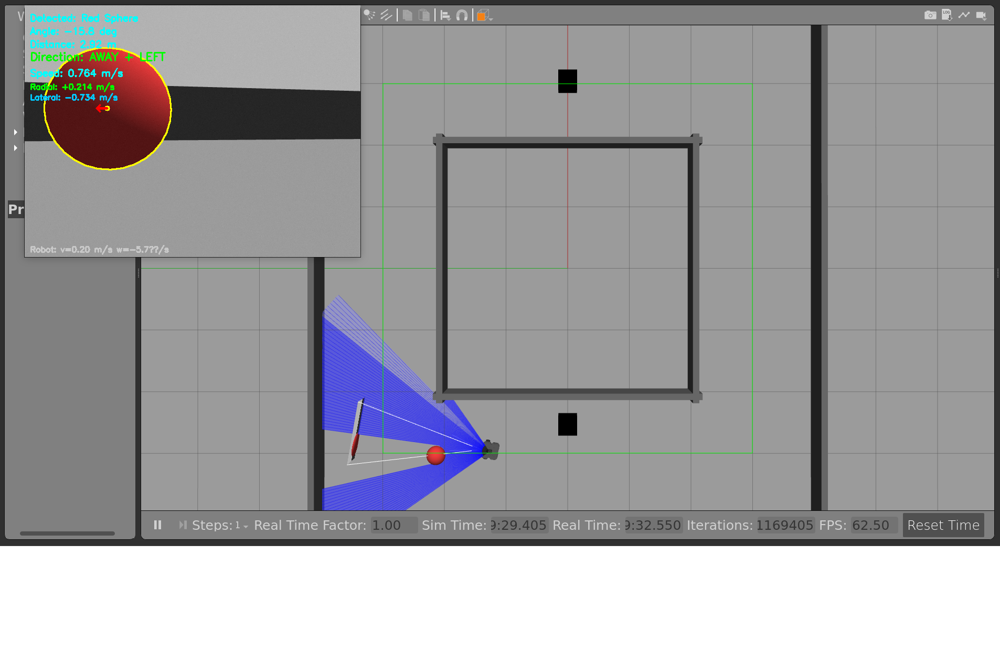
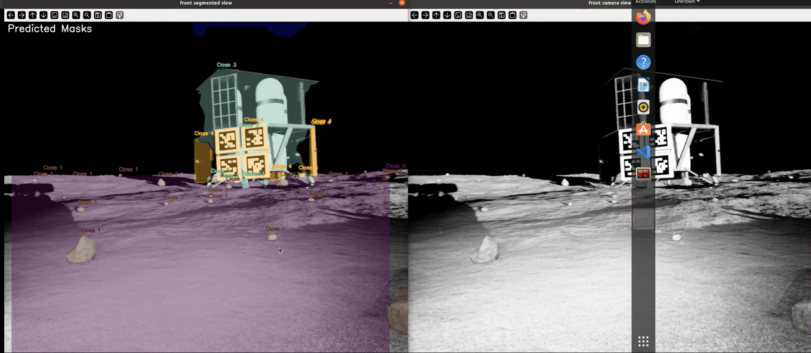
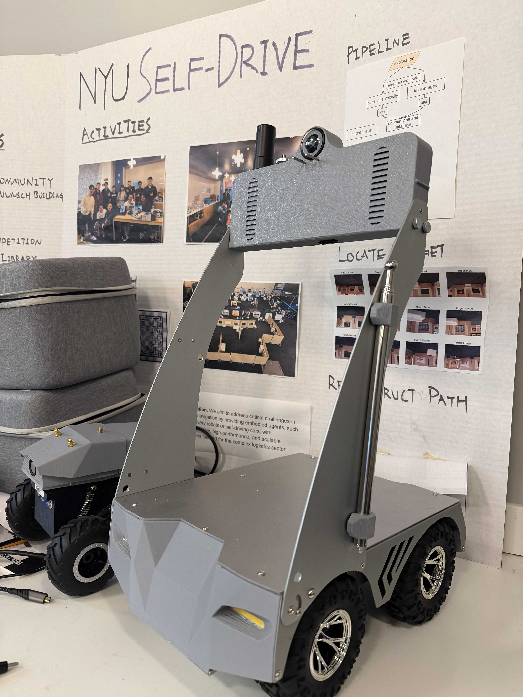
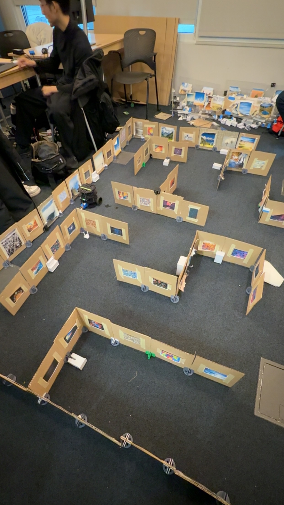
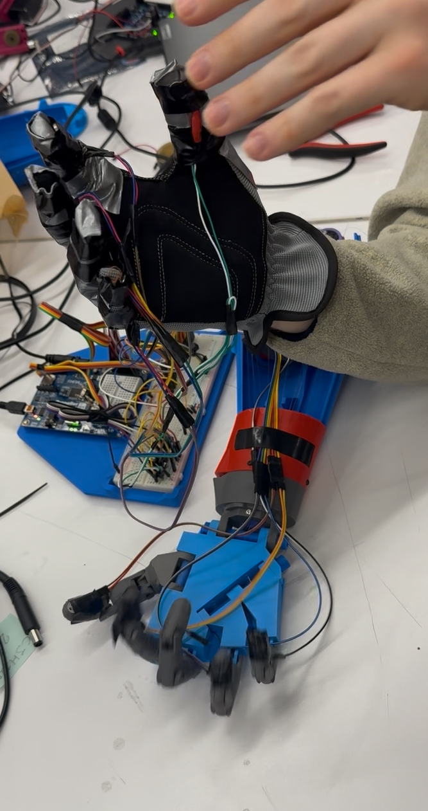
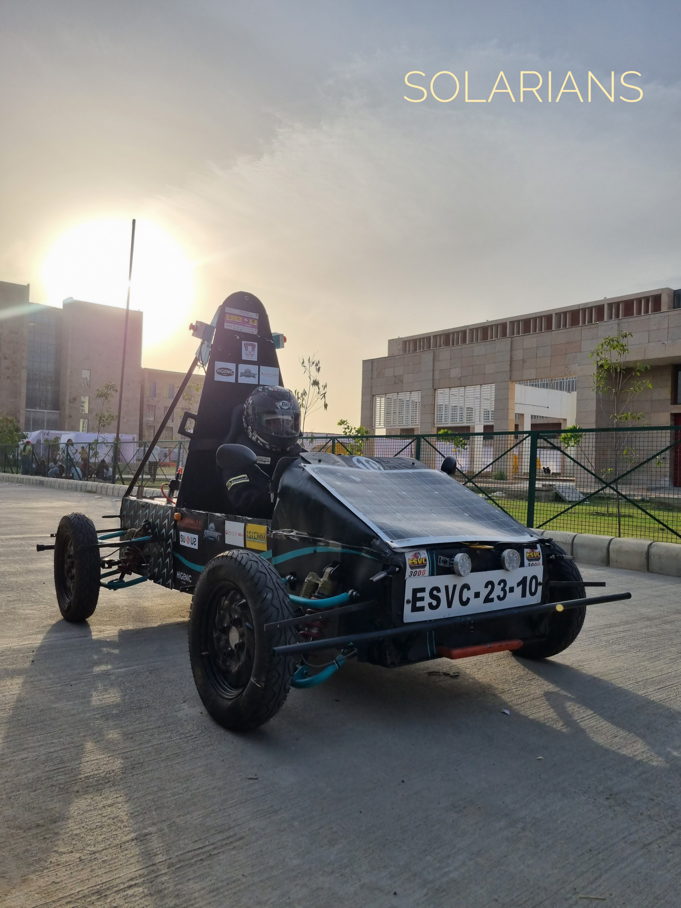

|
Vivekananda Swamy Mattam I'm a Master's student in Mechatronics and Robotics at NYU Tandon School of Engineering. Growing up in rural India, I saw firsthand the challenges of agriculture and inefficient processes. When I visited my grandfather's workplace at Mahindra and watched robots handle tasks that once required intense human labor, something clicked. That's when I realized robotics wasn't just about building cool machines but about creating systems that genuinely solve problems and reduce human burden. NYU has been an incredible learning experience. I've had the chance to work on a Bell Labs funded project distilling foundation models onto edge hardware for autonomous navigation, train quadruped robots with reinforcement learning in Isaac Lab, and work on visual SLAM and perception for the VIP Self-Drive project. Before coming here, I interned at Xmachines, an agricultural robotics startup, where I worked on sensor fusion and motion planning. Right now, I'm looking for internship/full-time opportunities in robotics, autonomous systems, or applied AI. I want to work on projects where the technology actually matters, where robots are solving real problems for real people. |
 |
{kind=link}
Experience |
|
 |
Course Assistant - Autonomous Mobile Robots
NYU Tandon School of Engineering, Prof. Aliasghar Arab 2024 - Present Course Materials Sole CA for a graduate-level robotics course. Created lecture notes, slides, and diagrams from the professor's raw notes, and built the course website hosting all materials. Covers vehicle kinematics, nonlinear control, Lyapunov stability, feedback linearization, MPC, Control Barrier Functions, motion planning, and verification & validation. Adopted as permanent course infrastructure. "Thank you to Vivek Mattam for his work in preparing and organizing this course website. Your dedication and attention to detail have made this resource exceptional." - Prof. Arab |
|
 |
Robotics Engineering Intern
Xmachines - Agricultural Robotics Startup 2024 Built a Flask server for real-time sensor streaming, integrating MPU-6050 IMU data and Arducam IMX219 camera feeds into a unified monitoring interface for debugging robot state during field tests. Developed an object detection tunnel for the weeder robot using computer vision to classify objects by size and route them into collection boxes, automating a previously manual sorting process. Also worked on ROS-based motion planning for navigation in dynamic farm environments, with embedded systems including Jetson Orin Nano, Arduino, and ESP32. Tech: ROS, Python, Flask, Embedded Systems, Jetson Orin Nano |
ProjectsI'm interested in autonomous navigation, visual SLAM, robot perception, and deploying learning-based systems on real robots. |
|
 
|
Vortex: Real-Time Edge Perception for Autonomous Navigation via Foundation Model Distillation
NYU, Bell Labs Funded (MS Project), Jan 2025-Present The problem. Foundation models like SAM2 and Depth Anything V2 deliver state-of-the-art perception, but they need server-class GPUs (300W, $15K+). Mobile robots run on edge hardware with hard constraints: 15W power, $250 budget, <10ms latency. The question is how much of that perception quality survives compression to a $250 Jetson, and is it enough to actually improve a robot's obstacle detection? What I built. An autonomous 1/10-scale RC car (Traxxas Maxx 4S) that navigates hospital corridors using a distilled perception model running entirely on a Jetson Orin Nano 8GB. No cloud. No laptop. Everything onboard. The distillation pipeline. I ran two large teacher models on an HPC cluster (NYU Torch, L40S GPUs): SAM2-Large (600M params) for semantic segmentation and Depth Anything V2-Large (300M+ params) for monocular depth. Their outputs supervised a single MobileNetV3-Small student (3M params) that predicts both depth and segmentation simultaneously from one RGB frame. The student is 300x smaller than its teachers and runs at ~5ms per frame on the Jetson via TensorRT FP16. Why not just use a LiDAR? The car has a 2D LiDAR (RPLiDAR A2M8), and it handles localization via AMCL. But a 2D laser scan is a single horizontal slice -- it can't see chairs (beam passes under), glass doors (laser passes through), or overhanging obstacles (above the scan plane). The student model provides dense 3D depth and per-pixel semantic labels from the camera, catching everything the LiDAR misses. Depth fusion. The Orbbec Femto Bolt camera provides hardware Time-of-Flight depth, but ToF has gaps on reflective surfaces, thin edges, and at range limits. The student model's learned depth fills those holes. The fusion node combines both: trust hardware ToF where confident, fall back to the student's prediction elsewhere. The fused depth feeds Nav2's 3D costmap for obstacle avoidance. The full stack. I wrote 6 ROS 2 nodes from scratch: VESC FOC motor control with a custom UART protocol decoder (reverse-engineered for firmware 6.06), Teensy 4.1 encoder feedback and steering, TensorRT inference, depth fusion, class-aware costmap generation, and a Twist-to-TwistStamped bridge. The navigation stack uses Nav2 with an MPPI controller, EKF fusing wheel odometry + IMU, and SLAM Toolbox for mapping. Hardware: Jetson Orin Nano 8GB, RPLiDAR A2M8, Orbbec Femto Bolt (RGB + ToF + 200Hz IMU), VESC MINI v6 MK5, Teensy 4.1, AS5600 encoders x2 Tech: ROS 2 Humble, Nav2, PyTorch, TensorRT, ONNX, Gazebo, Python, C++, SLURM, Singularity |

|
Reinforcement Learning for Quadruped Locomotion
NYU, 2024 Trained a Unitree Go2 robot to walk using PPO in NVIDIA Isaac Lab. Implemented reward shaping for smooth actions, gait coordination (Raibert heuristic), and body stability. Added an actuator friction model with domain randomization for sim-to-real transfer. The final policy tracks velocity commands at nearly 2x the baseline targets on both flat and rough terrain. Tools: Isaac Lab, PyTorch, PPO, NYU HPC | GitHub |
|
Autonomous Person Following on Boston Dynamics Spot
NYU, 2025 Built a real-time person-following system for Boston Dynamics Spot using visual servoing. The robot detects people with YOLOv8, computes lateral, distance, and pitch errors from the bounding box, and generates smooth velocity commands at 10Hz. Body pitch control enables tracking people on stairs and slopes. Currently exploring navigation world models to evolve from reactive control to predictive navigation, implementing ViNT (Visual Navigation Transformer) and GNM (General Navigation Models) for goal-conditioned navigation and cross-robot transfer learning. Tech: Python, PyTorch, YOLOv8, OpenCV, ZED SDK, Spot SDK, Docker, CUDA |
|
|
 
|
Lunar Autonomy Challenge
NASA-style Lunar Autonomy Challenge, 2024-Present Building an autonomous navigation system for a simulated lunar rover exploring unknown terrain without GPS or prior maps. The system combines ORB-SLAM3 for visual odometry with FoundationStereo for depth estimation in challenging lunar lighting. Key insight: instead of treating depth as ground truth, we propagate uncertainty through the entire pipeline. The planner actively avoids shadowed craters and texture-poor surfaces where perception is unreliable. A* planning with perception-aware costmaps and pure pursuit control complete the autonomy loop. Tech: Python, C++, ORB-SLAM3, FoundationStereo, OpenCV, ROS2, PyTorch |
|
 |
CityWalker-EarthRover Integration
NYU, Advisor: Prof. Chen Feng, 2024-Present Deployed CityWalker (CVPR 2025) on a FrodoBots EarthRover for sidewalk navigation. The model was trained on YouTube walking videos and had never seen this robot, so the whole deployment is zero-shot. Built the full pipeline from camera input to differential drive motor commands: preprocessing, waypoint prediction, coordinate transforms, and trajectory tracking. On top of this, working on Depth Barrier Regularization (DBR), a safety-aware training method that uses monocular depth estimation to penalize waypoint predictions that violate a safety margin. DBR converts depth maps into polar clearance vectors and adds a differentiable barrier loss during training, so the model learns to avoid obstacles without needing explicit collision labels. Offline results on CityWalk show a 15% reduction in depth violations and 23% increase in minimum depth margin while keeping navigation accuracy within 3% of baseline. Targeting CoRL 2026 submission. |
|
 |
Robot Perception: VIP Self-Drive
NYU Vertically Integrated Projects, Team Voyager Working on autonomous indoor navigation for TurtleBot3 using only visual SLAM, no LIDAR, just a monocular camera. I handle path planning with A* and robot localization using ORB feature matching. As part of Team Voyager, we built a maze navigation system using CosPlace descriptors for place recognition and SuperGlue for geometric verification. Also implemented 2D mapping with visual odometry using ORB features, multi-object tracking with YOLOv11 and ByteTrack, and wrote RANSAC plane fitting and ICP point cloud alignment from scratch for KITTI data. Tech: ROS 2 Humble, PyTorch, CosPlace, SuperGlue, OpenCV, YOLOv11, ByteTrack, ORB SLAM, TurtleBot3 |
|
HSRN Robot - Data Center Automation
NYU, 2024-Present Multi-robot coordination for data center tasks using ROS, Corelink, and sensor fusion. |
|
|
 |
The S.L.A.P. Hand - Gesture-Controlled Robotic Hand
Undergraduate Major Project S.L.A.P. (Simultaneous Linked Articulation Project) started as my undergraduate project and evolved over time. Began with Arduino and flex sensors for finger tracking, then moved to Propeller microcontrollers for better multi-servo control, and eventually Raspberry Pi for more computational power. The biggest shift was moving from flex sensors to vision-based control using Google's Mediapipe for hand tracking. The system now includes haptic feedback for tactile sensing. Tech: Raspberry Pi, Arduino, Propeller, Google Mediapipe, MPU6050, Haptic Feedback |

|
B.A.R.K. Door - IoT Pet Access System
Personal Project B.A.R.K. (Bluetooth Actuated Remote Key) Door is a smart pet door using RFID tags to recognize authorized pets and Bluetooth for manual control. Built with a BS2 microcontroller and servo mechanisms for the locking system. Tech: BS2, RFID, Bluetooth, IoT, Servo Mechanisms |
|
 |
E.S.V.C. - Solar-Powered Electric Vehicle
Electric Solar Vehicle Championship, Team Solarians 4.0 Designed the chassis for our entry in the Electric Solar Vehicle Championship (competing against 60+ teams). Used CATIA V5 for CAD and ANSYS R16.2 for structural analysis, optimizing an AISI 4130 steel tubular frame for lightweight design while meeting safety requirements. Tech: CATIA V5, ANSYS R16.2 |
Technical Skills
Languages: Python, C++, MATLAB |
Education
M.S. Mechatronics and Robotics
B.Tech. Mechanical Engineering |
|
Template from Jon Barron. Last updated: January 2025. |